Liyue Shen沈励钥
RexRex
Engineer工程师
AI in Industry工业领域的AI

 +86 188-0173-4215 · Narcy188@outlook.com · https://fatotter.github.io/
+86 188-0173-4215 · Narcy188@outlook.com · https://fatotter.github.io/About 关于我
- AvePoint — Business Analyst / Implementation Manager (2013.12–2017.8, Shanghai/Singapore): Led end-to-end delivery on Microsoft Dynamics CRM, SharePoint, O365; requirements, Agile, UAT, and post-go-live analytics. AvePoint — 商业分析师/实施经理（2013.12–2017.8，上海/新加坡）：负责端到端交付（Dynamics CRM、SharePoint、O365），参与并主导需求、敏捷开发、UAT及上线后数据分析。
- Fuji Xerox — Business Analyst (2017.9–2018.4): Pre-sales solutioning; China-overseas coordination; software, labor outsourcing, and device deployment proposals. 富士施乐 — 商业分析师（2017.9–2018.4）：售前方案设计；中外团队沟通；软件、劳务外包与设备部署方案。
- Trax — Implementation Manager / Data Specialist (2018.4–2020.2): Delivered retail CV/AI projects; BI configuration; market insight reporting. Trax — 实施经理/数据专家（2018.4–2020.2）：零售图像识别应用落地；BI配置；市场洞察报告。
- COMAC/Smart Aviation — PM / Algorithm Engineer / Solutions Manager (2022.7–Now): Pre-sales and delivery; lead a 10-person team. 上飞/商飞智能 — 项目经理/算法工程师/解决方案经理（2022.7至今）：售前与实施；带领10人团队。
Education 教育经历
- Bachelor, Fudan University (2010.9 – 2014.7), Communication Engineering. 本科｜复旦大学（2010.9 – 2014.7），通信工程专业。
- Master, The University of Queensland (2020.6 – 2022.7), Information Technology; research on privacy attacks and defenses in federated learning. 硕士｜昆士兰大学（2020.6 – 2022.7），信息技术专业；研究方向为联邦学习范式下的隐私窥探与防御。
Projects 项目经验
- Singapore MSF Business System: 150 PY scale; end-to-end from bidding to support; 6 major modules, 2200+ use cases, 2000+ pages of documentation; youth welfare data analysis. 新加坡社会与家庭发展部业务系统：约150人年；从应标到售后全流程；6个主要模块，2200+用例，2000+页英文文档；青少年福利数据分析。
- Shell China Visual Recognition Insights: Orchestrated data collection, AI training/inference pipeline, multi-dimensional reporting; built store scoring via ML. 壳牌中国视觉识别市场洞察：协同数据采集与AI识别流程，多维度报表；通过机器学习建立门店评分机制。
- Domestic Airliner Scheduling: Designed core algorithms (GA/simulation/MIP), Python+Flask service; tailored MES/MOM integration; first successful landing in industry. 国产民机智能排产：设计遗传算法/仿真/整数规划等核心算法，Python+Flask服务；对接MES/MOM；行业首次落地。
- OEM Process Digitalization: Modeling tool aligning internal processes with certification; led requirements, prototyping (process board/value stream/data definitions), iteration and acceptance. 主制造商过程数字化：建模工具，结合适航标准；牵头需求与原型（过程画板/价值流/数据定义），迭代与验收。
- Airport Group Digital Transformation: Led 3 sub-projects incl. procurement and research; explored discrete-event simulation and movement simulation for aviation. 某枢纽机场数字化转型：负责3个子项目，含采购与科研；探索离散事件仿真与航空器/车辆动线仿真。
Skills 技能
- Core: Office 365; SQL (MySQL/Postgres/Hive); Data (Python: numpy/torch/keras/matplotlib, R, Matlab); Web/Backend (JS/jQuery/Bootstrap, Java/SpringBoot, PHP/CodeIgniter). 核心：Office 365；SQL（MySQL/Postgres/Hive）；数据（Python：numpy/torch/keras/matplotlib，R，Matlab）；前后端（JS/jQuery/Bootstrap，Java/SpringBoot，PHP/CodeIgniter）。
- Qualifications: PMP; Agile; Lean Six Sigma. 资格：PMP；敏捷；精益六西格玛。
- Languages: English (business), Japanese (N2). 语言：英语（商务），日语（N2）。
- Publications: ACSAC 2022; TIFS 2023; The Web Conference 2023 & 2024. 学术：ACSAC 2022；TIFS 2023；Web Conference 2023与2024。